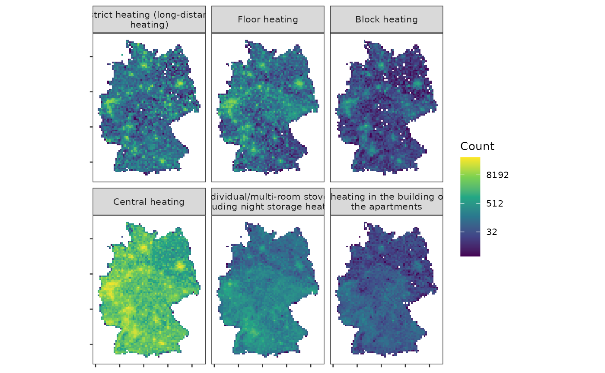
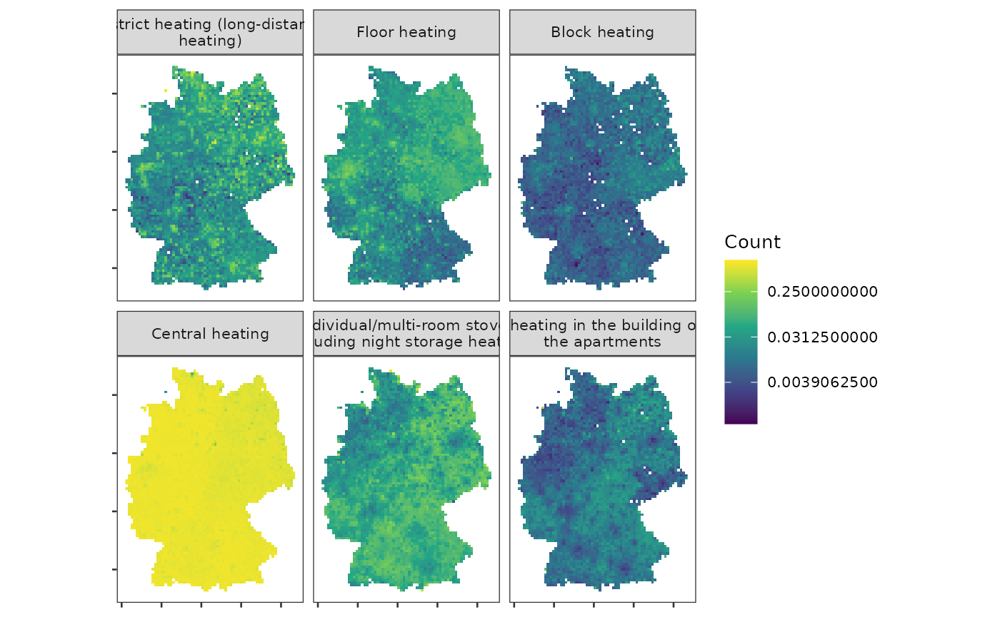
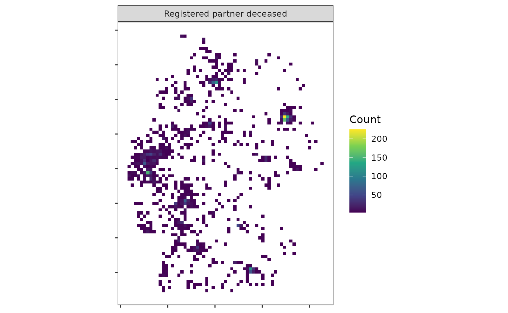
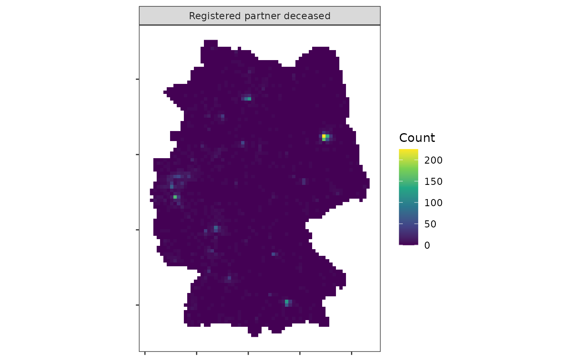

introduction.Rmd
library(z22)
library(dplyr)
#>
#> Attaching package: 'dplyr'
#> The following objects are masked from 'package:stats':
#>
#> filter, lag
#> The following objects are masked from 'package:base':
#>
#> intersect, setdiff, setequal, union
library(ggplot2)
library(terra)
#> terra 1.8.42
library(sf)
#> Linking to GEOS 3.12.1, GDAL 3.8.4, PROJ 9.4.0; sf_use_s2() is TRUEThe German 2022 census marks
the second German census for which spatial census data is published at a
grid level. While some progress has been made in the way the data is
processed, it is still only available as CSV dumps.
Working with these data programmatically can be quite burdensome.
{z22} aims to make it easier to read and process census
grid data from both 2022 and 2011 censuses. The functions establish a
standardized feature language that can translate data from 2011 to 2022,
and vice versa. It relies on preprocessed parquet chunks from the z22data data
repository where the data chunks are stored. The package is a successor
of Stefan Jüngers z11
package.
Data chunks are uniquely identified using features and categories. When I talk about a feature, I talk about an indicator aggregated to grid cells, for example, age groups or the number of dwellings. When I talk about a category, I talk about the discrete classifications of features, e.g., ages 10 to 19, 20 to 29, 30 to 39, etc. You can retrieve a list of all available features using:
z22_features()
#> # A tibble: 55 × 8
#> theme feature english german z22 z11_100m z11_1km has_cat
#> <chr> <chr> <chr> <chr> <lgl> <lgl> <lgl> <lgl>
#> 1 Population population Populati… Bevöl… TRUE TRUE TRUE FALSE
#> 2 Population citizens Number o… Deuts… TRUE FALSE FALSE FALSE
#> 3 Population foreigners Share of… Auslä… TRUE FALSE TRUE FALSE
#> 4 Population foreigners_from_18 Share of… Auslä… TRUE FALSE FALSE FALSE
#> 5 Population birth_country Country … Gebur… TRUE TRUE FALSE TRUE
#> 6 Population sex Sex Gesch… FALSE TRUE FALSE TRUE
#> 7 Population women Share of… Fraue… FALSE FALSE TRUE FALSE
#> 8 Population religion Religion Relig… FALSE TRUE FALSE TRUE
#> 9 Population citizenship Citizens… Staat… TRUE TRUE FALSE TRUE
#> 10 Population citizenship_group Citizens… Staat… TRUE TRUE FALSE TRUE
#> # ℹ 45 more rowsSimilarly, you can view a list of all categories for a feature.
z22_categories("birth_country")
#> # A tibble: 6 × 3
#> code german english
#> <dbl> <chr> <chr>
#> 1 1 Deutschland Germany
#> 2 20 Ausland Foreign
#> 3 21 EU27-Land EU27 country
#> 4 22 Europa Europe
#> 5 23 Welt World
#> 6 24 Sonstige OtherWhen I talk about grids, I mean a geographical grid net according to the EU INSPIRE standard. Grids always have a fixed resolution (100x100 m, 1x1 km, 10x10 km). Such grids are useful to aggregate sensitive spatial data to a relatively detailed level that is not as arbitrary as, e.g., municipality boundaries. You can get a raw grid dataset based on the GeoGitter dataset using:
grid <- z22_grid("10km", as_sf = TRUE)
plot(grid, pch = 16, cex = 0.1)Although the data chunks are relatively small in size, downloading
grids and features again and again can take a while and strain internet
tariffs unnecessarily, data files are automatically cached, i.e., if a
file is downloaded again, it is simply read from the cache. You can
update stale cache files using the update_cache
argument.
To equip a raw raster with feature values, you can use the
z22_data function. Here, I download data on the type of
heating in buildings across Germany. Using the rasterize
argument, I can convert the output to a SpatRaster from the
terra package.
grid_ht <- z22_data("building_heat_type", res = "10km", rasterize = TRUE)After rasterization, the results are returned in a
SpatRasterDataset, which is essentially a list of
SpatRasters. To plot them, you can use the
z22_pivot_longer function to turn them to a long (and
facetable) table.
df_ht <- z22_pivot_longer(grid_ht, "building_heat_type")
ggplot(df_ht) +
geom_raster(aes(x, y, fill = value)) +
facet_wrap(~category, nrow = 2, labeller = label_wrap_gen(width = 35)) +
coord_sf(crs = 3035) +
scale_fill_viridis_c("Count", na.value = "transparent", transform = "log2") +
theme_bw(base_size = 10) +
labs(x = NULL, y = NULL) +
theme(panel.grid = element_blank(), axis.text = element_blank())
However, as you can see, we are dealing with absolute counts, which
makes the meaningfulness of the data questionable on its own. The
spatial patterns look very similar in each facet and mostly trace
spatial population patterns of Germany. To retrieve normalized (=
percentage) figures, we can use the normalize argument of
z22_data. Re-downloading the data should also take much
less time because the data files are still cached.
grid_ht <- z22_data(
"building_heat_type",
res = "10km",
rasterize = TRUE,
normalize = TRUE
)
df_ht <- z22_pivot_longer(grid_ht, "building_heat_type")
ggplot(df_ht) +
geom_raster(aes(x, y, fill = value)) +
facet_wrap(~category, nrow = 2, labeller = label_wrap_gen(width = 35)) +
coord_sf(crs = 3035) +
scale_fill_viridis_c("Share", na.value = "transparent", transform = "log2") +
theme_bw(base_size = 10) +
labs(x = NULL, y = NULL) +
theme(panel.grid = element_blank(), axis.text = element_blank())
By visualizing shares, we can observe that spatial differences are
not nearly as pronounced as the total numbers had us believe.
Particularly central heating is almost spatially homogeneous. Note that
the normalize argument is only sensible for features that
are counts.
There is one more issue that you can see in the map above. Some cells
are NA or entirely missing from the dataset and thus not
shown at all on the maps. These are cells where no observations can be
counted. In the case of heating, the issue is not as pressing but in
other cases the feature grid becomes a patchwork. Some marital statuses,
for example, are rarely seen in some areas of Germany.
grid_ht <- z22_data(
"marital_status",
categories = 6,
res = "10km",
rasterize = TRUE
)
df_ht <- z22_pivot_longer(grid_ht, "marital_status")
ggplot(df_ht) +
geom_raster(aes(x, y, fill = value)) +
coord_sf(crs = 3035) +
facet_wrap(~category, nrow = 2) +
scale_fill_viridis_c("Count", na.value = "transparent") +
theme_bw() +
labs(x = NULL, y = NULL) +
theme(panel.grid = element_blank(), axis.text = element_blank())
#> Warning: Raster pixels are placed at uneven horizontal intervals and will be shifted
#> ℹ Consider using `geom_tile()` instead.
#> Raster pixels are placed at uneven horizontal intervals and will be shifted
#> ℹ Consider using `geom_tile()` instead.
To fill these gaps, you can request all cells using the
all_cells argument.
grid_ht <- z22_data(
"marital_status",
categories = 6,
res = "10km",
rasterize = TRUE,
all_cells = TRUE
)
df_ht <- z22_pivot_longer(grid_ht, "marital_status")
ggplot(df_ht) +
geom_raster(aes(x, y, fill = value)) +
coord_sf(crs = 3035) +
facet_wrap(~category, nrow = 2) +
scale_fill_viridis_c("Count", na.value = "transparent") +
theme_bw() +
labs(x = NULL, y = NULL) +
theme(panel.grid = element_blank(), axis.text = element_blank())
Working with 10x10 km grids is cool and all, but the census grids get really exciting when looking at 100x100 m grids. Let’s, for example, look at the average age distribution in the area of Berlin.